2026-11-27 13:20 UTC« Je suis sur un beau club de Ligue 1 » : Cyril Hanouna n’investira pas à Guingamp mais reste intéressé par le football
🚨 « Je suis sur un beau club de Ligue 1 » : Cyril Hanouna n’investira pas à Guingamp mais reste intéressé par le football
📰 Source : Le Parisien Sport
#Football #Actu
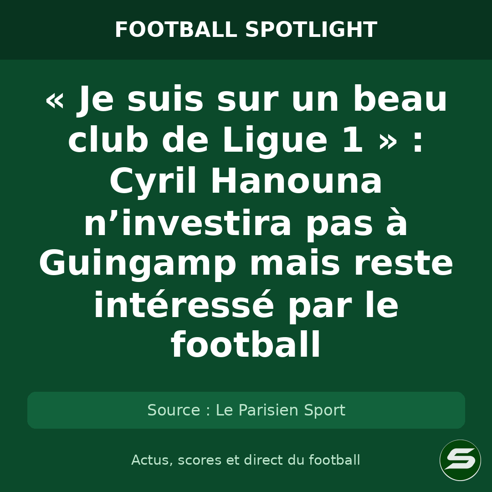
Lire la suite →2026-11-27 13:20 UTCConduite dangereuse, gaz hilarant : l’ancien footballeurs international anglais Raheem Sterling condamné à un an de prison avec sursis
🚨 Conduite dangereuse, gaz hilarant : l’ancien footballeurs international anglais Raheem Sterling condamné à un an de prison avec sursis
📰 Source : Le Parisien Sport
#Football #Actu
 Lire la suite →2026-11-27 13:20 UTC
Lire la suite →2026-11-27 13:20 UTCFrance-Afrique du Sud : « Il a une revanche à prendre », Thomas Ramos, le retour d’un patron
🚨 France-Afrique du Sud : « Il a une revanche à prendre », Thomas Ramos, le retour d’un patron
📰 Source : Le Parisien Sport
#Football #Actu
 Lire la suite →2026-11-27 13:20 UTC
Lire la suite →2026-11-27 13:20 UTCFootball : nouveau duel Maroc-Sénégal pour le titre de joueur africain de l’année
🚨 Football : nouveau duel Maroc-Sénégal pour le titre de joueur africain de l’année
📰 Source : Le Parisien Sport
#Football #Actu
Lire la suite →2026-11-27 13:20 UTC« Aujourd’hui, on a deux MVP » : le geste fort de Kylian Mbappé envers Vinicius Jr après la victoire du Real Madrid
🚨 « Aujourd’hui, on a deux MVP » : le geste fort de Kylian Mbappé envers Vinicius Jr après la victoire du Real Madrid
📰 Source : Le Parisien Sport
#Football #Actu
Lire la suite →2026-11-27 13:20 UTCRugby : le prix Jauréguy-Dominici décerné à Philippe Sella
🚨 Rugby : le prix Jauréguy-Dominici décerné à Philippe Sella
📰 Source : Le Parisien Sport
#Football #Actu
 Lire la suite →2026-11-27 12:50 UTC
Lire la suite →2026-11-27 12:50 UTCPSG - AS Rome : le groupe des 23 joueurs parisiens retenus par Luis Enrique pour le 5e match de Ligue des champions
🚨 PSG - AS Rome : le groupe des 23 joueurs parisiens retenus par Luis Enrique pour le 5e match de Ligue des champions
📰 Source : Le Parisien Sport
#Football #Actu
 Lire la suite →2026-11-27 12:50 UTC
Lire la suite →2026-11-27 12:50 UTC« Je voudrais commencer avec quelque chose de plus important que le football... » : le beau message de soutien de Rayan Cherki à Désiré Doué
🚨 « Je voudrais commencer avec quelque chose de plus important que le football... » : le beau message de soutien de Rayan Cherki à Désiré Doué
📰 Source : Le Parisien Sport
#Football #Actu
 Lire la suite →2026-11-27 12:50 UTC
Lire la suite →2026-11-27 12:50 UTCBrésil : deux ingénieurs condamnés à huit ans de prison après la mort de dix joueurs du centre de formation de Flamengo
🚨 Brésil : deux ingénieurs condamnés à huit ans de prison après la mort de dix joueurs du centre de formation de Flamengo
📰 Source : Le Parisien Sport
#Football #Actu
Lire la suite →2026-11-27 12:50 UTC« Je suis fatigué » : Florian Thauvin écourte une interview après la nouvelle déroute du RC Lens en Ligue des champions
🚨 « Je suis fatigué » : Florian Thauvin écourte une interview après la nouvelle déroute du RC Lens en Ligue des champions
📰 Source : Le Parisien Sport
#Football #Actu
 Lire la suite →2026-11-27 12:50 UTC
Lire la suite →2026-11-27 12:50 UTCLigue des champions : l’adorable réaction du fils de Rafael Nadal après le but exceptionnel de Jude Bellingham avec le Real Madrid
🚨 Ligue des champions : l’adorable réaction du fils de Rafael Nadal après le but exceptionnel de Jude Bellingham avec le Real Madrid
📰 Source : Le Parisien Sport
#Football #Actu
 Lire la suite →2026-11-27 12:50 UTC
Lire la suite →2026-11-27 12:50 UTCRennes : premier contrat professionnel pour l’attaquant Mouhammad Valmy
🚨 Rennes : premier contrat professionnel pour l’attaquant Mouhammad Valmy
📰 Source : Le Parisien Sport
#Football #Actu
Lire la suite →2026-11-27 12:20 UTC« Marquinhos, c’est le numéro un ! » : Luis Fernandez fait du Brésilien « LA légende » du PSG
🚨 « Marquinhos, c’est le numéro un ! » : Luis Fernandez fait du Brésilien « LA légende » du PSG
📰 Source : Le Parisien Sport
#Football #Actu
 Lire la suite →2026-11-27 12:20 UTC
Lire la suite →2026-11-27 12:20 UTC« Je serai innocenté de cette accusation » : le tennisman Arthur Rinderknech dément avoir refusé de se soumettre à un contrôle antidopage
🚨 « Je serai innocenté de cette accusation » : le tennisman Arthur Rinderknech dément avoir refusé de se soumettre à un contrôle antidopage
📰 Source : Le Parisien Sport
#Football #Actu
Lire la suite →2026-11-27 12:20 UTCPSG - AS Rome : pourquoi Leonardo Balerdi, le nouveau roc romain, offrira un gros chèque à Marseille s’il joue beaucoup
🚨 PSG - AS Rome : pourquoi Leonardo Balerdi, le nouveau roc romain, offrira un gros chèque à Marseille s’il joue beaucoup
📰 Source : Le Parisien Sport
#Football #Actu
Lire la suite →2026-11-27 12:20 UTCPSG-AS Rome : treize ans après son arrivée à Paris, Marquinhos est devenu un monument
🚨 PSG-AS Rome : treize ans après son arrivée à Paris, Marquinhos est devenu un monument
📰 Source : Le Parisien Sport
#Football #Actu
Lire la suite →2026-11-27 12:20 UTCFinale polémique, tensions, actions en justice… Pourquoi le Sénégal a été déclaré vainqueur de la CAN 2025
🚨 Finale polémique, tensions, actions en justice… Pourquoi le Sénégal a été déclaré vainqueur de la CAN 2025
📰 Source : Le Parisien Sport
#Football #Actu
 Lire la suite →2026-11-27 12:20 UTC
Lire la suite →2026-11-27 12:20 UTCPSG-AS Rome : montrer que Paris est toujours doué
🚨 PSG-AS Rome : montrer que Paris est toujours doué
📰 Source : Le Parisien Sport
#Football #Actu
 Lire la suite →2026-11-27 11:50 UTC
Lire la suite →2026-11-27 11:50 UTCPSG - AS Rome : combien de points faut-il à Paris pour se qualifier directement pour les 8es de finale de la Ligue des champions ?
🚨 PSG - AS Rome : combien de points faut-il à Paris pour se qualifier directement pour les 8es de finale de la Ligue des champions ?
📰 Source : Le Parisien Sport
#Football #Actu
Lire la suite →2026-11-27 11:50 UTCLeipzig-Lens (3-1) : les Sang et Or payent cher leur début de match raté et chutent encore en Ligue des champions
🚨 Leipzig-Lens (3-1) : les Sang et Or payent cher leur début de match raté et chutent encore en Ligue des champions
📰 Source : Le Parisien Sport
#Football #Actu
 Lire la suite →2026-11-27 11:50 UTC
Lire la suite →2026-11-27 11:50 UTCElle plongeait à 92 m sans respirer : l’ancienne championne du monde d’apnée Jeanine Grasmeijer est décédée à 33 ans
🚨 Elle plongeait à 92 m sans respirer : l’ancienne championne du monde d’apnée Jeanine Grasmeijer est décédée à 33 ans
📰 Source : Le Parisien Sport
#Football #Actu
 Lire la suite →2026-11-27 11:50 UTC
Lire la suite →2026-11-27 11:50 UTC« Merci à Gianni Infantino » : Donald Trump salue le président de la Fifa après l’attribution du Mondial féminin 2031 aux États-Unis
🚨 « Merci à Gianni Infantino » : Donald Trump salue le président de la Fifa après l’attribution du Mondial féminin 2031 aux États-Unis
📰 Source : Le Parisien Sport
#Football #Actu
Lire la suite →2026-11-27 11:50 UTC« Plutôt la mort que la souillure » : Cyril Hanouna recalé par l’En Avant Guingamp après la fronde des supporters
🚨 « Plutôt la mort que la souillure » : Cyril Hanouna recalé par l’En Avant Guingamp après la fronde des supporters
📰 Source : Le Parisien Sport
#Football #Actu
Lire la suite →2026-11-27 11:50 UTC« On ne peut que dire aux sportives démerdez-vous ! », face aux tests de féminité imposés par le CIO, la France dans une impasse
🚨 « On ne peut que dire aux sportives démerdez-vous ! », face aux tests de féminité imposés par le CIO, la France dans une impasse
📰 Source : Le Parisien Sport
#Football #Actu
Lire la suite →2026-11-27 11:20 UTCRennes : le gardien Kilian Belazzoug en passe de prolonger jusqu’en 2030
🚨 Rennes : le gardien Kilian Belazzoug en passe de prolonger jusqu’en 2030
📰 Source : Le Parisien Sport
#Football #Actu
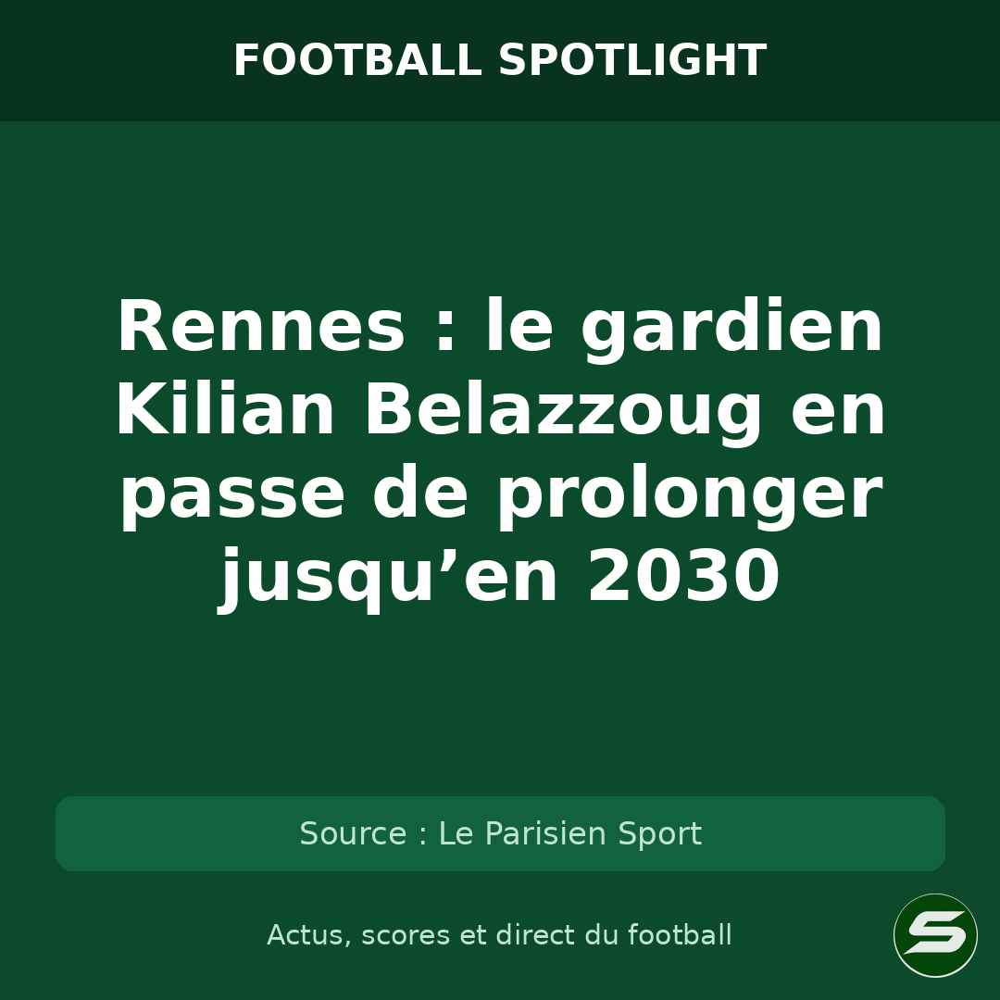
Lire la suite →2026-11-27 11:20 UTC« Les courts me manquent énormément » : Jannik Sinner opéré du genou droit après des mois de douleur
🚨 « Les courts me manquent énormément » : Jannik Sinner opéré du genou droit après des mois de douleur
📰 Source : Le Parisien Sport
#Football #Actu
Lire la suite →2026-11-27 11:20 UTCFrance-Afrique du Sud : le Grand Rex à Paris ouvrira ses portes dimanche pour une diffusion géante de la finale
🚨 France-Afrique du Sud : le Grand Rex à Paris ouvrira ses portes dimanche pour une diffusion géante de la finale
📰 Source : Le Parisien Sport
#Football #Actu
Lire la suite →2026-11-27 11:20 UTCLe Sénégal désigné vainqueur de la CAN 2025 : « Le TAS a rendu justice au sport », les Lions de la Teranga jubilent après leur victoire
🚨 Le Sénégal désigné vainqueur de la CAN 2025 : « Le TAS a rendu justice au sport », les Lions de la Teranga jubilent après leur victoire
📰 Source : Le Parisien Sport
#Football #Actu
Lire la suite →2026-11-27 11:20 UTCSão Paulo 3 - 1 Clube do Remo
⏱️ TERMINÉ
⚽ SÃO PAULO 3 - 1 CLUBE DO REMO
✅ Victoire de São Paulo
🏆 Campeonato Brasileiro Série A · Journée 37
#Football #CampeonatoBrasileiroSérieA
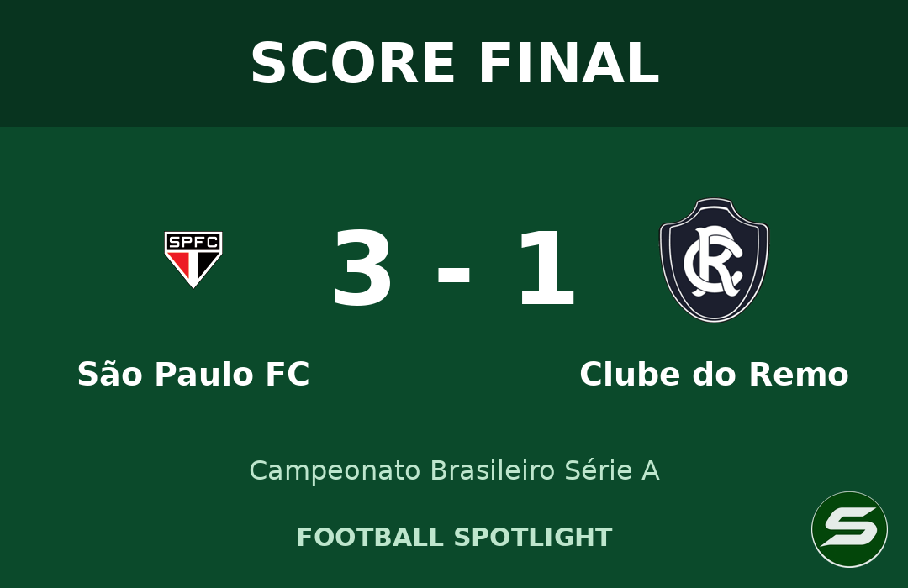
2026-11-27 11:20 UTCMatchs du vendredi 27 novembre 2026
📅 MATCHS DU JOUR – vendredi 27 novembre 2026
🕒 19:00 – Groningen vs Willem II (Eredivisie)
🕒 19:30 – Bremen vs M'gladbach (Bundesliga)
🕒 19:45 – Venezia FC vs Bologna (Serie A)
🕒 19:45 – Brest vs Paris FC (Ligue 1)
🕒 20:00 – Levante vs Santander (Primera Division)
🕒 20:00 – Southampton vs Middlesbrough (Championship)
🕒 20:00 – Nottingham vs Chelsea (Premier League)
🕒 20:15 – Marítimo vs CD Nacional (Primeira Liga)
🕒 23:00 – Fluminense vs Cruzeiro (Campeonato Brasileiro Série A)
🔥 Bon match à tous !
#Football
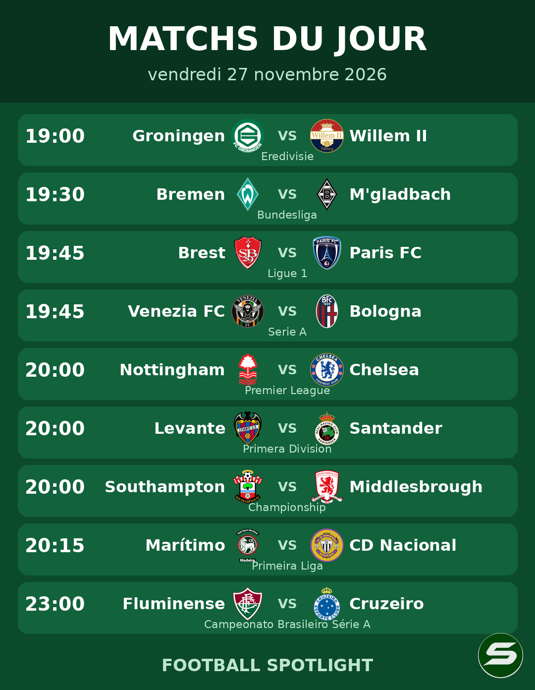
2026-11-24 00:42 UTCTadej Pogacar annonce la couleur pour 2027 : un premier sacre sur Paris-Roubaix et un 6e sur le Tour de France dans le viseur
🚨 Tadej Pogacar annonce la couleur pour 2027 : un premier sacre sur Paris-Roubaix et un 6e sur le Tour de France dans le viseur
📰 Source : Le Parisien Sport
#Football #Actu
Lire la suite →2026-11-24 00:42 UTCBayern Munich : blessé à la cheville, le Ballon d’or Harry Kane absent « plusieurs mois »
🚨 Bayern Munich : blessé à la cheville, le Ballon d’or Harry Kane absent « plusieurs mois »
📰 Source : Le Parisien Sport
#Football #Actu
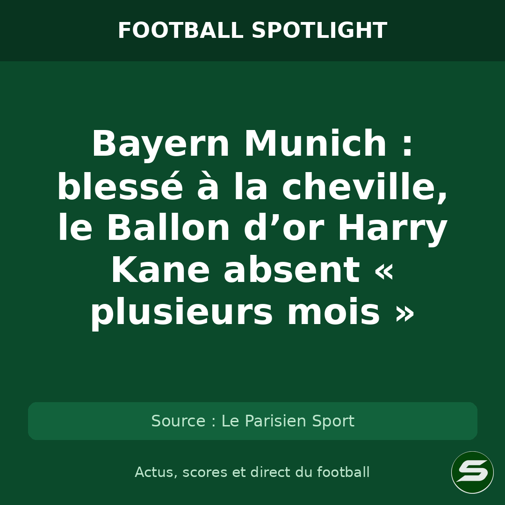
Lire la suite →2026-11-24 00:42 UTCMMA : le nutritionniste de Manon Fiorot, suspendue pour dopage, admet sa responsabilité et « assume les conséquences de cette erreur »
🚨 MMA : le nutritionniste de Manon Fiorot, suspendue pour dopage, admet sa responsabilité et « assume les conséquences de cette erreur »
📰 Source : Le Parisien Sport
#Football #Actu
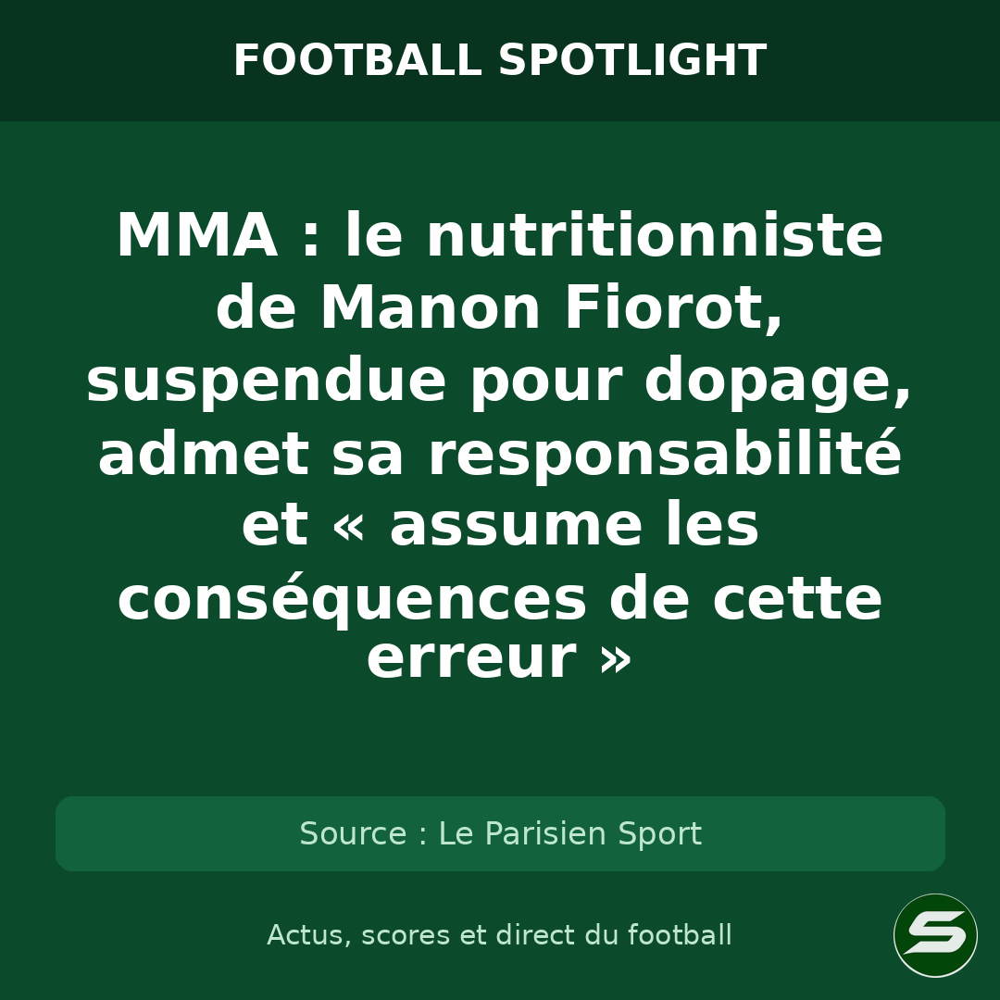
Lire la suite →2026-11-24 00:42 UTCFrance-Argentine : « Pourquoi cela s’arrêterait maintenant ? », le XV de France en route vers la grande finale
🚨 France-Argentine : « Pourquoi cela s’arrêterait maintenant ? », le XV de France en route vers la grande finale
📰 Source : Le Parisien Sport
#Football #Actu
Lire la suite →2026-11-24 00:42 UTCClassement Primeira Liga
📊 Classement Primeira Liga (top 10)
🥇 Porto – 33 pts
🥈 SL Benfica – 28 pts
🥉 Sporting CP – 24 pts
4. Santa Clara – 21 pts
5. Arouca – 20 pts
6. Acad. Viseu – 20 pts
7. Gil Vicente – 18 pts
8. Braga – 17 pts
9. Moreirense – 14 pts
10. Famalicão – 13 pts
📌 Porto est en tête avec 33 points en 11 matchs, 5 point(s) d'avance sur SL Benfica.
#Football
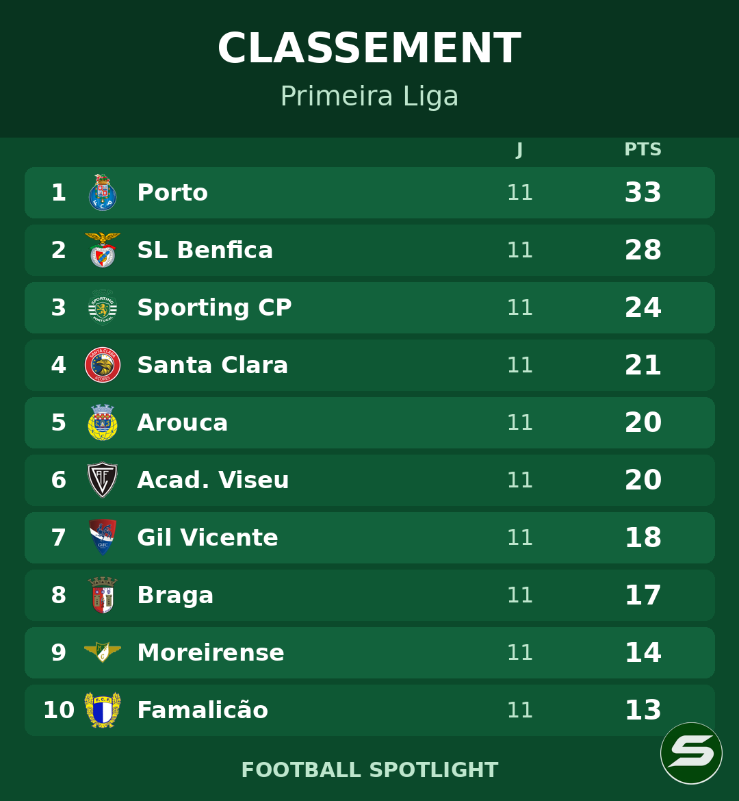
2026-11-24 00:42 UTCClassement Bundesliga
📊 Classement Bundesliga (top 10)
🥇 Dortmund – 24 pts
🥈 Bayern – 22 pts
🥉 Freiburg – 22 pts
4. RB Leipzig – 21 pts
5. Leverkusen – 19 pts
6. Bremen – 18 pts
7. Frankfurt – 15 pts
8. Stuttgart – 13 pts
9. Elversberg – 13 pts
10. Augsburg – 12 pts
📌 Dortmund est en tête avec 24 points en 10 matchs, 2 point(s) d'avance sur Bayern.
#Football
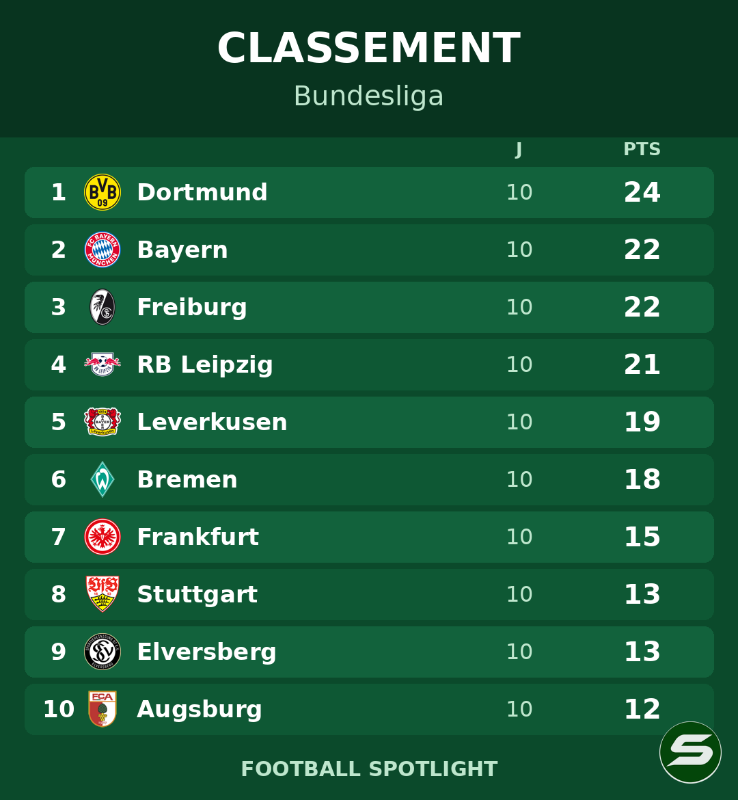
2026-11-24 00:13 UTCFormule 1 : Max Verstappen partira en pole position au Grand Prix de Las Vegas après la pénalité de Kimi Antonelli
🚨 Formule 1 : Max Verstappen partira en pole position au Grand Prix de Las Vegas après la pénalité de Kimi Antonelli
📰 Source : Le Parisien Sport
#Football #Actu
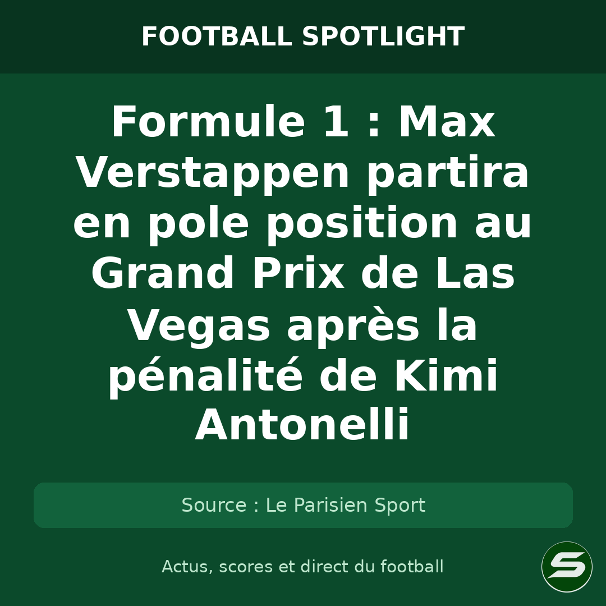
Lire la suite →2026-11-24 00:13 UTC« Nous sommes comme ses soldats » : Antoine Dupont, génie du rugby devenu capitaine incontesté du XV de France
🚨 « Nous sommes comme ses soldats » : Antoine Dupont, génie du rugby devenu capitaine incontesté du XV de France
📰 Source : Le Parisien Sport
#Football #Actu
Lire la suite →2026-11-24 00:12 UTCClassement Serie A
📊 Classement Serie A (top 10)
🥇 Lazio – 32 pts
🥈 Roma – 30 pts
🥉 Inter – 29 pts
4. Milan – 27 pts
5. Como 1907 – 26 pts
6. Juventus – 21 pts
7. Frosinone – 20 pts
8. Napoli – 18 pts
9. Bologna – 18 pts
10. Genoa – 16 pts
📌 Lazio est en tête avec 32 points en 12 matchs, 2 point(s) d'avance sur Roma.
#Football
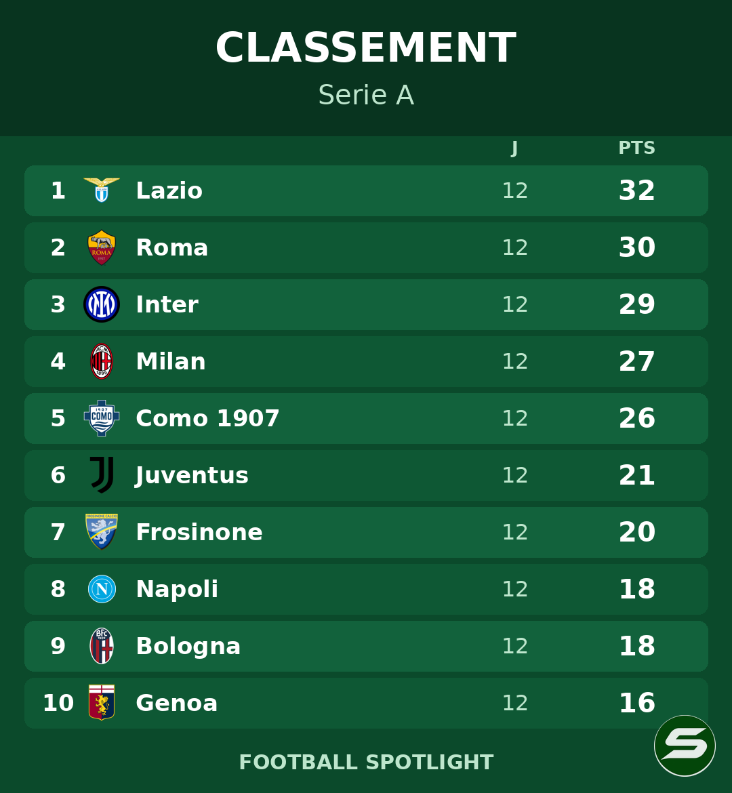
2026-11-24 00:12 UTCClassement Primera Division
📊 Classement Primera Division (top 10)
🥇 Barça – 36 pts
🥈 Real Madrid – 33 pts
🥉 Atleti – 31 pts
4. Real Betis – 27 pts
5. Real Sociedad – 22 pts
6. Sevilla FC – 19 pts
7. Santander – 17 pts
8. Athletic – 16 pts
9. Alavés – 16 pts
10. Villarreal – 15 pts
📌 Barça est en tête avec 36 points en 13 matchs, 3 point(s) d'avance sur Real Madrid.
#Football
 2026-11-24 00:12 UTC
2026-11-24 00:12 UTCClassement Premier League
📊 Classement Premier League (top 10)
🥇 Arsenal – 28 pts
🥈 Brighton Hove – 22 pts
🥉 Man City – 22 pts
4. Liverpool – 21 pts
5. Bournemouth – 18 pts
6. Brentford – 17 pts
7. Leeds United – 17 pts
8. Chelsea – 16 pts
9. Everton – 16 pts
10. Tottenham – 15 pts
📌 Arsenal est en tête avec 28 points en 11 matchs, 6 point(s) d'avance sur Brighton Hove.
#Football
 2026-11-24 00:12 UTC
2026-11-24 00:12 UTCClassement Ligue 1
📊 Classement Ligue 1 (top 10)
🥇 PSG – 26 pts
🥈 Paris FC – 23 pts
🥉 Lille – 21 pts
4. Olympique Lyon – 20 pts
5. Marseille – 18 pts
6. Brest – 18 pts
7. Nice – 17 pts
8. Monaco – 17 pts
9. Stade Rennais – 17 pts
10. Lorient – 16 pts
📌 PSG est en tête avec 26 points en 11 matchs, 3 point(s) d'avance sur Paris FC.
#Football
 2026-11-24 00:04 UTC
2026-11-24 00:04 UTCDéjà un duel avec Infantino ? En Afrique, Philippe Diallo lance sa mission presque impossible pour être élu à la tête de la Fifa
🚨 Déjà un duel avec Infantino ? En Afrique, Philippe Diallo lance sa mission presque impossible pour être élu à la tête de la Fifa
📰 Source : Le Parisien Sport
#Football #Actu
 Lire la suite →2026-11-24 00:04 UTC
Lire la suite →2026-11-24 00:04 UTC« On n’a vu que lui » : de Cergy en amateurs à la Ligue 1 avec Nice, la folle ascension de Djibril Coulibaly
🚨 « On n’a vu que lui » : de Cergy en amateurs à la Ligue 1 avec Nice, la folle ascension de Djibril Coulibaly
📰 Source : Le Parisien Sport
#Football #Actu
 Lire la suite →2026-11-24 00:04 UTC
Lire la suite →2026-11-24 00:04 UTCBrentford 4 - 0 Everton
⏱️ TERMINÉ
⚽ BRENTFORD 4 - 0 EVERTON
✅ Victoire de Brentford
🏆 Premier League · Journée 11
#Football #PremierLeague
 2026-11-24 00:04 UTC
2026-11-24 00:04 UTCLevante 1 - 1 Elche
⏱️ TERMINÉ
⚽ LEVANTE 1 - 1 ELCHE
🤝 Match nul
🏆 Primera Division · Journée 13
#Football #PrimeraDivision
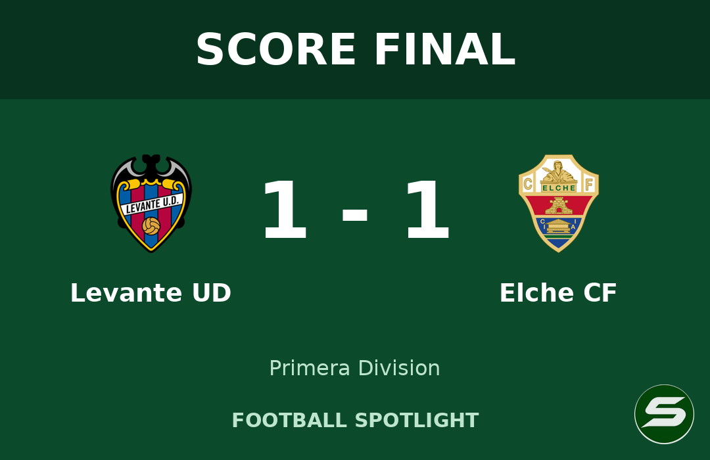
2026-11-24 00:04 UTCMonza 3 - 0 Fiorentina
⏱️ TERMINÉ
⚽ MONZA 3 - 0 FIORENTINA
✅ Victoire de Monza
🏆 Serie A · Journée 12
#Football #SerieA
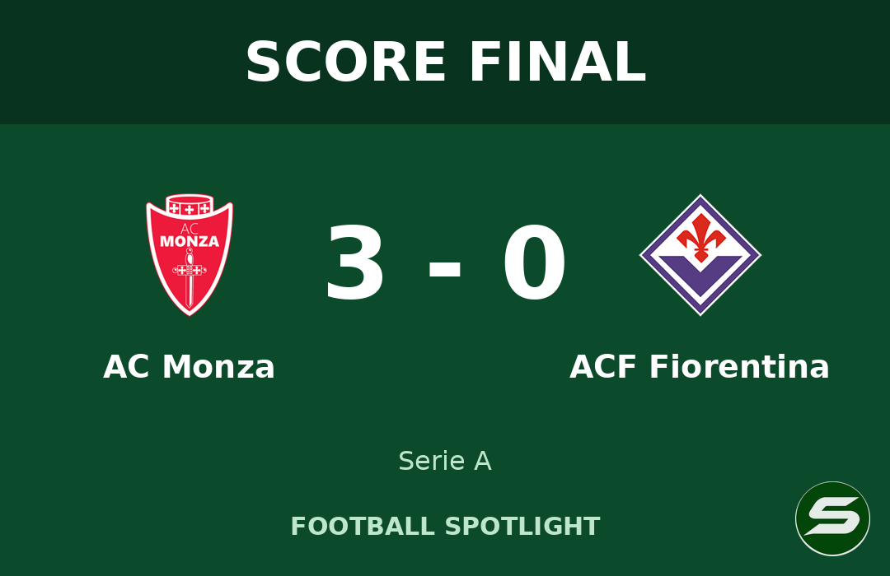
2026-11-24 00:04 UTCMatchs du mardi 24 novembre 2026
📅 MATCHS DU JOUR – mardi 24 novembre 2026
🕒 00:00 – Santos vs Grêmio (Campeonato Brasileiro Série A)
🕒 17:45 – Galatasaray vs Aston Villa (UEFA Champions League)
🕒 17:45 – Bodø/Glimt vs LASK (UEFA Champions League)
🕒 19:45 – Charlton vs Lincoln City (Championship)
🕒 19:45 – Middlesbrough vs Swansea (Championship)
🕒 19:45 – Norwich vs QPR (Championship)
🕒 19:45 – Sheffield Utd vs Southampton (Championship)
🕒 19:45 – Cardiff vs Preston NE (Championship)
🕒 19:45 – Bristol City vs Wrexham (Championship)
🕒 19:45 – Portsmouth vs West Ham (Championship)
🕒 20:00 – Sl. Bratislava vs Real Betis (UEFA Champions League)
🕒 20:00 – Real Madrid vs PSV (UEFA Champions League)
🕒 20:00 – Como 1907 vs PAE AEK (UEFA Champions League)
🕒 20:00 – Arsenal vs Dortmund (UEFA Champions League)
🕒 20:00 – Wolverhampton vs Derby County (Championship)
🔥 Bon match à tous !
#Football
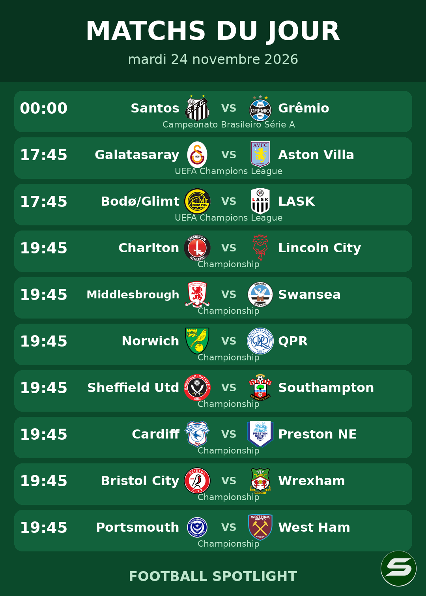
2026-11-23 23:38 UTCJuventus 4 - 0 Venezia FC
⏱️ TERMINÉ
⚽ JUVENTUS 4 - 0 VENEZIA FC
✅ Victoire de Juventus
🏆 Serie A · Journée 12
#Football #SerieA
 2026-11-23 23:38 UTC
2026-11-23 23:38 UTCTwente 2 - 1 Willem II
⏱️ TERMINÉ
⚽ TWENTE 2 - 1 WILLEM II
✅ Victoire de Twente
🏆 Eredivisie · Journée 13
#Football #Eredivisie
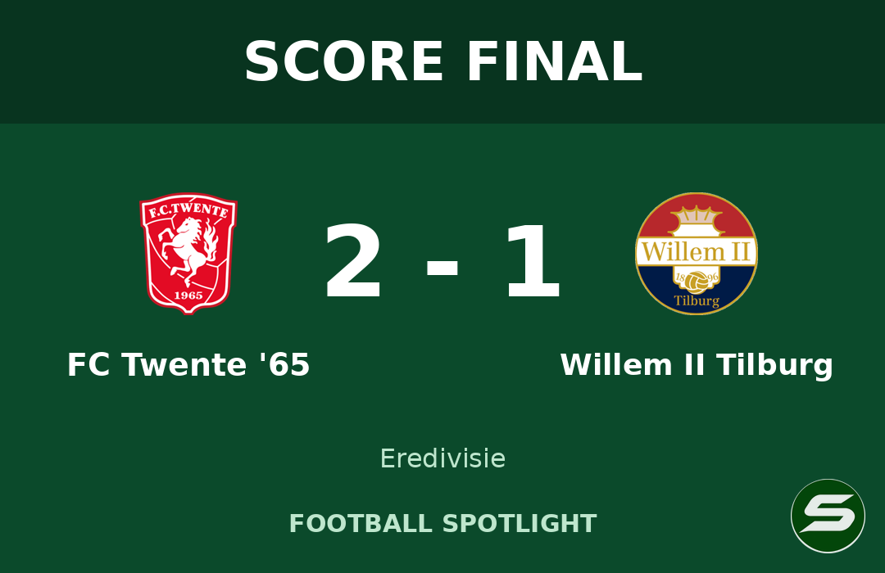
2026-11-23 23:38 UTCChapecoense 1 - 2 Cruzeiro
⏱️ TERMINÉ
⚽ CHAPECOENSE 1 - 2 CRUZEIRO
✅ Victoire de Cruzeiro
🏆 Campeonato Brasileiro Série A · Journée 36
#Football #CampeonatoBrasileiroSérieA
 2026-11-23 23:38 UTC
2026-11-23 23:38 UTCMatchs du lundi 23 novembre 2026
📅 MATCHS DU JOUR – lundi 23 novembre 2026
🕒 19:45 – Monza vs Fiorentina (Serie A)
🕒 20:00 – Levante vs Elche (Primera Division)
🕒 20:00 – Brentford vs Everton (Premier League)
🕒 22:30 – Internacional vs Vitória (Campeonato Brasileiro Série A)
🕒 23:00 – Botafogo vs São Paulo (Campeonato Brasileiro Série A)
🔥 Bon match à tous !
#Football